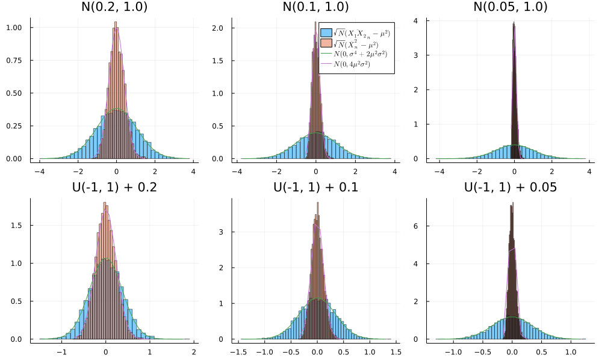
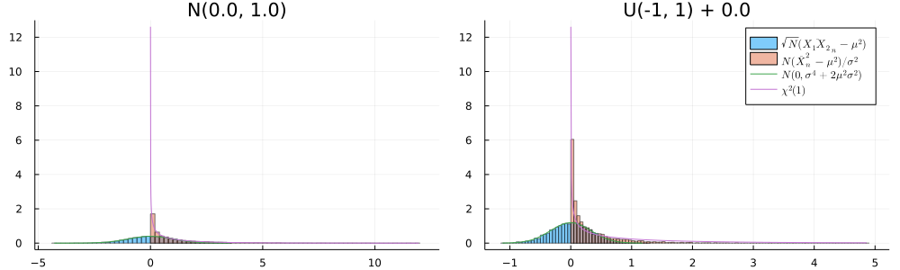
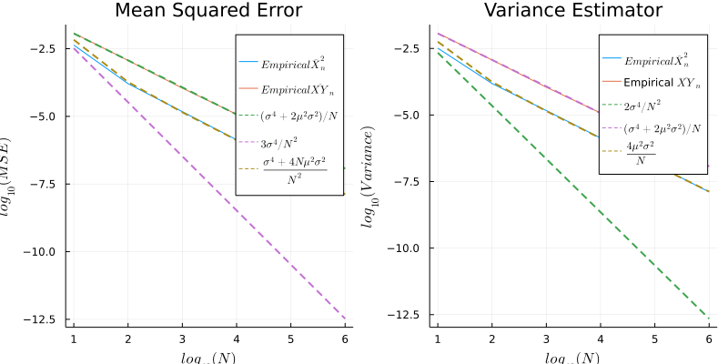

Introduction
Recently, I came across a simple question that led me through a quite interesting rabbit hole. The question is very simple (and very niche), but the analysis involves key results from statistical theory and numerical analysis (the Central Limit Theorem, the Delta method, and the second-order Delta method, Monte Carlo integration).
Here is the seemingly innocent (and slightly bizarre) question:
- Context: One is interested in evaluating the square of an expectation $E\Big[g(X) \Big]^2 = \big(\int_{a}^{b} g(x) f_X(x) dx \Big)^2 = \mu^2$, where $\mu$ is an unknown quantity “close to zero”. Note that the integral squared can be rewritten as $\big(\int_{a}^{b} g(x) f_X(x) dx \Big)^2 = \int_{a}^{b} \int_{a}^{b} g(x) g(y) f_X(x) f_Y(y) dx dy $. Transforming the square of an integral into a double integral is a standard trick, that is for instance used when calculating the Gaussian integral. Let’s say one want to numerically approximate $\mu^2$ using Monte Carlo integration.
- Question: Is it better to approximate $\mu^2$ using the square of the Monte Carlo estimator $\big(\frac{1}{N} \sum_{i=1}^{N} f(x_i) \Big)^2$, or the Monte Carlo estimator based on the double integral: $\frac{1}{N} \sum_{i=1}^{N} f(x_i) f(y_i) $? Here the sample ${x_i}$ and ${y_i}$ are i.i.d random variables with density f(.). The random variables ${x_i}$ and ${y_i}$ have the same density function, but they are drawn independently from each other.
I. Consistency
Notice that both estimators are consistent. That is, as we increase $N$, the estimators converges in probability to the true value of the parameter $\mu^2$.
Estimator $\big(\frac{1}{N} \sum_{i=1}^{N} f(x_i) \Big)^2$
We know that Monte Carlo estimator are consistent: So $\frac{1}{N} \sum_{i=1}^{N} f(x_i) \overset{p}{\to} \mu$. Because the function $x \rightarrow x^2$ is continuous on $R$, the continuous mapping theorem implies that $\Big(\frac{1}{N} \sum_{i=1}^{N} f(x_i)\Big)^2 \overset{p}{\to} \mu^2$.
Estimator $\frac{1}{N} \sum_{i=1}^{N} f(x_i) f(y_i) $
Once again, we know that Monte Carlo estimator are consistent. So $\frac{1}{N} \sum_{i=1}^{N} f(x_i) f(y_i) \overset{p}{\to} \int_{a}^{b} \int_{a}^{b} g(x) g(y) f_X(x) f_Y(y) dx dy = \big(\int_{a}^{b} g(x) f_X(x) dx \Big)^2 = \mu^2$.
Hence, both estimators get closer to the true value as we increase the number of draws N.
II. Bias
Interestingly, $\big(\frac{1}{N} \sum_{i=1}^{N} f(x_i) \Big)^2$ has a small sample bias, while $\frac{1}{N} \sum_{i=1}^{N} f(x_i) f(y_i) $ does not.
Estimator $\big(\frac{1}{N} \sum_{i=1}^{N} f(x_i) \Big)^2$
$$ E[ \big(\frac{1}{N} \sum_{i=1}^{N} f(x_i) \Big)^2] = \big(E [\frac{1}{N} \sum_{i=1}^{N} f(x_i)] \Big)^2 + Var(\frac{1}{N} \sum_{i=1}^{N} f(x_i))$$
$$ E[ \big(\frac{1}{N} \sum_{i=1}^{N} f(x_i) \Big)^2] = \mu^2 + \frac{\sigma^2}{N} $$
$$ Bias(\big(\frac{1}{N} \sum_{i=1}^{N} f(x_i) \Big)^2) = \frac{\sigma^2}{N} $$
Estimator $\frac{1}{N} \sum_{i=1}^{N} f(x_i) f(y_i) $
$$ E [\frac{1}{N} \sum_{i=1}^{N} f(x_i) f(y_i)] = \frac{1}{N} \sum_{i=1}^{N} E[f(x_i) f(y_i)] $$
$$ = \frac{1}{N} \sum_{i=1}^{N} E[f(x_i)] E[ f(y_i)] $$
$$ = \mu^2 $$
$$ Bias(\frac{1}{N} \sum_{i=1}^{N} f(x_i) f(y_i) ) = 0 $$
Where, going from the first line to the second is based on the fact that $X$ and $Y$ are independent random variables. However, the bias is just one part of the whole story. To see which estimator is better, we also need to investigate their variance.
III. Variance. Case $\mu > 0$
Estimator $\big(\frac{1}{N} \sum_{i=1}^{N} f(x_i) \Big)^2$
Note that the value $\bar{Xn} = \frac{1}{N} \sum{i=1}^{N} f(x_i) $ is the sample mean. The Central Limit Theorem implies that:
$$\sqrt{N} \frac{(\bar{X_n} - \mu)}{\sigma} \overset{d}{\to} N(0,1)$$
To get the (asymptotic) variance of $\bar{X_n}^2$, one may use the delta method. The delta method states that if there is a sequence of random variables $X_n$ satisfying:
$$\sqrt{N} (\bar{X_n} - \theta) \overset{d}{\to} N(0,\sigma^2)$$
with $\theta$ and $\sigma^2$ finite valued constants. Assume that $g$ is a function with continuous first derivative, satisfying the property that $g’(\theta)$ is non-zero valued. Then,
$$\sqrt{N} (g(\bar{X_n}) - g(\theta)) \overset{d}{\to} N(0,\sigma^2 [g’(\theta)]^2)$$
Here $g(x) = x^2$, $g’(x) = 2x$, so the delta method implies that:
$$\sqrt{N} (\bar{X_n}^2 - \mu^2) \overset{d}{\to} N(0,4\mu^2 \sigma^2)$$.
Estimator $\frac{1}{N} \sum_{i=1}^{N} f(x_i) f(y_i) $
Let’s use the notation $\bar{XY}_n = \frac{1}{N} \sum_{i=1}^{N} f(x_i) f(y_i) $. Once again, the Central Limit Theorem implies that:
$$\sqrt{N} (\bar{XY}_n - \mu^2) \overset{d}{\to} N(0, \sigma_{XY})$$
with $\sigma_{XY} = \sqrt{Var(\bar{XY}_n)}$.
If $X$ and $Y$ are independent random variables, then $Var(XY) = Var(X)Var(Y) + Var(X)(E[Y]^2) + Var(Y)(E[X]^2)$.
Here $Var(X) = Var(Y) = \sigma$, and $E[X] = E[Y] = \mu$, so the above equation simplifies to:
$$ Var(XY) = \sigma^4 + 2 \mu^2 \sigma^2$$.
Comparison $Var(\bar{XY}_n)$ vs $Var(\bar{X}_n^2)$
For large values of $\mu$, the estimator $\bar{XY}_n$ has smaller variance. However, when $\mu$ is small, $\bar{X_n}$ has a smaller variance. This property is illustrated below by plotting the function $\mu \rightarrow (\sigma^4 + 2\mu^2\sigma^2) - 4\mu^2\sigma^2$ for different choices of $\sigma$.
using Plots
using LaTeXStrings
using Distributions
gr()
N = 100
grid_sigma = collect(range(0, 1.0, length=N))
grid_mu = collect(range(0, 1.0, length=N))
grid_mu_smaller = collect(range(0, 0.25, length=N))
diff = zeros(N,N)
f(mu, sigma) = (sigma.^4 .+ (2.0.*mu.^2).*(sigma.^2)) .- 4.0 .*(mu.^2).*(sigma.^2)
#p = plot(grid_mu, grid_sigma, (x,y) -> f(x,y), st = :contourf, xlabel=L"\mu", ylabel=L"\sigma", fill=true)
p0 = plot(grid_mu, x -> 0.0, label=L"0", linestyle=:dash, ylabel=L"(\sigma^4 + 2\mu^2\sigma^2) - 4\mu^2\sigma^2")
plot!(p0, grid_mu, x -> f(x,1.0), xlabel=L"\mu", label=L"f(\mu, \sigma=1.0)")
plot!(p0, grid_mu, x -> f(x,0.75), xlabel=L"\mu", label=L"f(\mu, \sigma=0.75)")
plot!(p0, grid_mu, x -> f(x,0.5), xlabel=L"\mu", label=L"f(\mu, \sigma=0.5)")
p1 = plot(grid_mu_smaller, x -> 0.0, label=L"0", linestyle=:dash, ylabel=L"(\sigma^4 + 2\mu^2\sigma^2) - 4\mu^2\sigma^2")
plot!(p1, grid_mu_smaller, x -> f(x,0.25), xlabel=L"\mu", label=L"f(\mu, \sigma=0.25)")
plot!(p1, grid_mu_smaller, x -> f(x,0.20), xlabel=L"\mu", label=L"f(\mu, \sigma=0.20)")
plot!(p1, grid_mu_smaller, x -> f(x,0.15), xlabel=L"\mu", label=L"f(\mu, \sigma=0.15)")
plot(p0, p1)

In the block of code below, I estimate $\bar{XY}_n$ and $\bar{X}_n^2$ in two cases. First, I assume that $X$ is normally distributed with mean $\mu$ and unit variance. In this case, we do not even need the central limit theorem, because the sum of iid Normal variables is also normally distributed. In the second case, I assume that $X$ is uniformly distributed $Uni(\mu-1, \mu+1)$, in which case the mean of $X$ is equal to $\mu$.
As illustrated below, in both instances $\bar{X}_n^2$ has a smaller variance than $\bar{XY}_n$. The figure also underlines that even when $X$ is not normally distributed, the CLT kicks in and the above analysis provides a good estimate of the small sample behavior of our estimators.
N = 1000 #number of draws
N_replicate = 5000 #number of replications for the distribution of the estimator
list_plots = [] #to store plots
sigma = 1.0 #variance when simulating from Normal
for (index_distribution, distribution) in enumerate(["Normal", "Uniform"])
for (index_mu, mu) in enumerate([0.20, 0.10, 0.05])
#println(mu)
if distribution == "Normal"
d_x = Normal(mu, sigma)
d_x1 = Normal(mu, sigma)
d_x2 = Normal(mu, sigma)
else
d_x = Uniform(-1,1) + mu
d_x1 = Uniform(-1,1) + mu
d_x2 = Uniform(-1,1) + mu
end
# f(x) = x
distristribution_square = zeros(N_replicate) # (mean(x))^2
distristribution_square_centered = zeros(N_replicate) # (mean(x))^2 - mu^2
distristribution_product_centered = zeros(N_replicate) # (mean(x1 x2) - mu^2
distristribution_square_std = zeros(N_replicate)
distristribution_square_mean = zeros(N_replicate)
distristribution_product_std = zeros(N_replicate)
distristribution_product_mean = zeros(N_replicate)
for i=1:N_replicate
draws_x = rand(d_x, N)
draws_x1 = rand(d_x1, N)
draws_x2 = rand(d_x2, N)
distristribution_square[i] = mean(draws_x .- mu)^2
distristribution_square_centered[i] = sqrt(N)*(mean(draws_x)^2 - mu^2)
distristribution_product_centered[i] = sqrt(N)*(mean(draws_x1.*draws_x2) - mu^2)
distristribution_square_std[i] = std(draws_x)
distristribution_square_mean[i] = mean(draws_x)
distristribution_product_std[i] = std(draws_x1.*draws_x2)
distristribution_product_mean[i] = mean(draws_x1.*draws_x2)
end
# Empirical sigmas
mu_X1X2 = mean(distristribution_product_mean)
sigma_X1X2 = mean(distristribution_square_std)
var_n0_empirical = sigma_X1X2^4 + sigma_X1X2^2*(2*mu_X1X2^2)
mu_X_squared = mean(distristribution_square_mean)
sigma_X_squared = mean(distristribution_square_std)
var_n1_empirical = (4*mu_X_squared^2*sigma_X_squared^2)
# Theoretical sigmas when using Normal draws
var_n0 = sigma^2 * sigma^2 + sigma^2*(2*mu^2) #var(distristribution_product_centered) #(sigma^2)
var_n1 = (4*mu^2*sigma^2)
pdf_normal_0 = Normal(0, sqrt(var_n0_empirical))
pdf_normal_1 = Normal(0, sqrt(var_n1_empirical))
# Plotting
show_legend = false
if index_mu == 2 && index_distribution == 1
show_legend = true
end
title_name = ""
if index_distribution == 1
title_name = "N($(mu), $(sigma))"
else
title_name = "U(-1, 1) + $(mu)"
end
p1 = histogram(distristribution_product_centered, label=L"$\sqrt{N}(\bar{X_1 X_2}_{n} - \mu^2 ) $", normalize=true, alpha=0.5)
histogram!(p1, distristribution_square_centered, label=L"$\sqrt{N}(\bar{X}_{n}^2 - \mu^2 )$", normalize=true, alpha=0.5, title=title_name)
plot!(p1, minimum(distristribution_product_centered):0.1:maximum(distristribution_product_centered), x-> pdf(pdf_normal_0, x), label=L"$N(0, \sigma^4 + 2\mu^2\sigma^2)$")
plot!(p1, minimum(distristribution_square_centered):0.1:maximum(distristribution_square_centered), x-> pdf(pdf_normal_1, x), label=L"$N(0, 4 \mu^2 \sigma^2)$", legend = show_legend)
push!(list_plots, p1)
end
end
plot(list_plots[1], list_plots[2], list_plots[3], list_plots[4], list_plots[5], list_plots[6])
plot!(size=(1000,600))

IV. Variance. Case $\mu = 0$
The limit case $\mu = 0$ deserves a special treatment. Indeed, for the delta method to applies, the condition that $g′(\theta)$ is non-zero valued must hold. However with $g(\theta) = \theta^2$, $g’(0) = 2\times0=0$.
In that context, the second-order delta method applies:
Second order delta method
Consider a sequence of random variables $X_n$ satisfying:
$$\sqrt{N} (\bar{X_n} - \theta) \overset{d}{\to} N(0,\sigma^2)$$
with $\theta$ and $\sigma^2$ finite valued constants. Assume that $g$ is a function with continuous first and second derivatives, satisfying the property that $g’(\theta) = 0$ and $g”(\theta) \neq 0$. Then:
$$N (g(\bar{X_n}) - g(\theta)) \overset{d}{\to} \sigma^2 \frac{g”(\theta)}{2} \chi^2(1)$$
So applying the second order delta method with $g’(\theta) = \theta^2$ and $\mu=0$ gives us:
$$N (\bar{X_n}^2) \overset{d}{\to} \sigma^2 \chi^2(1)$$
Using the fact that $Var(\chi^2(1)) = 2$ and rearranging terms gives:
$$ Var(\bar{X_n}^2) \approx \frac{2 \sigma^4}{N^2}$$
This approximation should get increasingly better as $N$ increases.
Comparison $Var(\bar{XY}_n)$ vs $Var(\bar{X}_n^2)$
When $\mu=0$:
$$Var(\bar{XY}_n) = \frac{\sigma^4}{N}$$
and
$$Var(\bar{X_n}^2) = \frac{2\sigma^4}{N^2}$$
Because of the $N^2$ at the denominator, we see that $\bar{X_n}^2$ converges much faster than $\bar{XY}_n$. This property is illustrated on the plot below, in which I do the same exercice as before, but with $\mu=0$. Note that I show the histogram of $\sqrt{N}(\bar{X_1 X_2}_{n} - \mu^2 )$ versus $N(\bar{X}^2_{n} - \mu^2 )$ (scaling with $\sqrt{N}$ versus $N$).
N = 1000#number of draws
N_replicate = 5000 #number of replications for the distribution of the estimator
list_plots = []
sigma=1.0 #variance when simulating from Normal
for (index_distribution, distribution) in enumerate(["Normal", "Uniform"])
for (index_mu, mu) in enumerate([0.0])
#println(mu)
if distribution == "Normal"
d_x = Normal(mu, sigma)
d_x1 = Normal(mu, sigma)
d_x2 = Normal(mu, sigma)
else
d_x = Uniform(-1,1) + mu
d_x1 = Uniform(-1,1) + mu
d_x2 = Uniform(-1,1) + mu
end
# f(x) = x
distristribution_square = zeros(N_replicate) # (mean(x))^2
distristribution_square_centered = zeros(N_replicate) # (mean(x))^2 - mu^2
distristribution_product_centered = zeros(N_replicate) # (mean(x1 x2) - mu^2
distristribution_square_std = zeros(N_replicate)
distristribution_square_var = zeros(N_replicate)
distristribution_square_mean = zeros(N_replicate)
distristribution_product_std = zeros(N_replicate)
distristribution_product_mean = zeros(N_replicate)
for i=1:N_replicate
draws_x = rand(d_x, N)
draws_x1 = rand(d_x1, N)
draws_x2 = rand(d_x2, N)
distristribution_square[i] = mean(draws_x .- mu)^2
distristribution_square_centered[i] = N*(mean(draws_x)^2 - mu^2)/sigma
distristribution_product_centered[i] = sqrt(N)*(mean(draws_x1.*draws_x2) - mu^2)
distristribution_square_std[i] = std(draws_x)
distristribution_square_var[i] = var(draws_x)
distristribution_square_mean[i] = mean(draws_x)
distristribution_product_std[i] = std(draws_x1.*draws_x2)
distristribution_product_mean[i] = mean(draws_x1.*draws_x2)
end
# Empirical sigmas
mu_X1X2 = mean(distristribution_product_mean)
sigma_X1X2 = mean(distristribution_product_std)
mu_X_squared = mean(distristribution_square_mean)
var_X_squared = mean(distristribution_square_var)
var_n0_empirical = var_X_squared^2 + sigma_X1X2^2*(2*mu_X1X2^2)
pdf_normal_0 = Normal(0, sqrt(var_n0_empirical))
pdf_chisq_1 = Chisq(1)
# Plotting
show_legend = false
if index_mu == 1 && index_distribution == 2
show_legend = true
end
title_name = ""
if index_distribution == 1
title_name = "N($(mu), $(sigma))"
else
title_name = "U(-1, 1) + $(mu)"
end
p1 = histogram(distristribution_product_centered, label=L"$\sqrt{N}(\bar{X_1 X_2}_{n} - \mu^2 ) $", normalize=true, alpha=0.5)
histogram!(p1,distristribution_square_centered, label=L"$N(\bar{X}_{n}^2 - \mu^2)/\sigma^2$", normalize=true, alpha=0.5, title=title_name)
plot!(p1, minimum(distristribution_product_centered):0.1:maximum(distristribution_product_centered), x-> pdf(pdf_normal_0, x), label=L"$N(0, \sigma^4 + 2\mu^2\sigma^2)$")
plot!(p1, 0.001:0.01:maximum(distristribution_square_centered), x-> pdf(pdf_chisq_1, x), label=L"$\chi^2(1)$", legend = show_legend)
push!(list_plots, p1)
end
end
plot(list_plots[1], list_plots[2])
plot!(size=(1000,300))

V. Mean Squared Error
To is a measure the quality of an estimator, it is common to use the mean squared error (MSE). In plain English, the mean squared error measures the average squared difference between the estimated values and the actual value:
$$ MSE(\hat{\theta}) = E_{\theta} [ (\hat{\theta} - \theta)^2] $$
The MSE has the appealing property that it is equal to the variance of the estimator, plus the bias squared:
$$ MSE(\hat{\theta}) = V [ \hat{\theta} ] + Bias(\hat{\theta})^2$$
Fortunately, we have already done the heavy lifting by calculating the biases and the variances of the estimators. Collecting the previous results, we have.
Case $\mu >0 $
$$ MSE(\bar{X}^2_n) = \frac{\sigma_f^4 + 4N \mu^2 \sigma_f^2}{N^2} $$
$$ MSE(\bar{XY}_n) = \frac{\sigma_f^4}{N} $$
Case $\mu = 0$
$$ MSE(\bar{X}^2_n) = \frac{3 \sigma_f^4}{N^2}$$
$$ MSE(\bar{XY}_n) = \frac{\sigma_f^4}{N} $$
It is easy to see that when $\mu$ is close or equal to 0, it is better to use $\bar{X}^2_n$ instead $\bar{XY}_n$. In the next section, I check that numerically with some examples.
VI. Numerical illustration
Case $\mu = 0$
The takeaway of the previous sections is that if we suspect $\mu$ in a neighborhood of 0, one is better off using $\bar{X_n}^2$ instead of $\bar{XY}_n$.
Now I compare the accuracy of both approaches for a numerical integration exercice. For instance, let’s approximate the integral:
$$ \Big(\int_{-\infty}^{+\infty} x^3 \frac{1}{\sqrt{2\pi}} \exp(\frac{-1}{2}x^2) dx \Big)^2 $$
The true value of the integral is known to be zero (odd central moment of a normally distributed random variable). The left panel in the next graph shows the mean squared error for $\bar{X}^2_n$ and $\bar{XY}_n$. As expected given the previous sections, $\bar{X}^2_n$ provides a much better approximation to $\mu^2$ than $\bar{XY}_n$.
grid_N = [100, 1000, 10000, 100000, 1000000]
N_replicate = 1000 #number of replications for the distribution of the estimator
# To store stats values
distristribution_mean = zeros(length(grid_N), N_replicate)
distristribution_var = zeros(length(grid_N), N_replicate)
distristribution_var_product = zeros(length(grid_N), N_replicate)
distristribution_square_mean = zeros(length(grid_N), N_replicate)
distristribution_product_mean = zeros(length(grid_N), N_replicate)
# Store stats on distribution of values for each replication
distristribution_mean_var = zeros(length(grid_N))
distristribution_mean_var_product = zeros(length(grid_N))
distristribution_square_average = zeros(length(grid_N))
distristribution_square_var = zeros(length(grid_N))
distristribution_product_average = zeros(length(grid_N))
distristribution_product_var = zeros(length(grid_N))
# To store stats on Mean Squared Error (MSE)
distristribution_square_MSE_average = zeros(length(grid_N))
distristribution_square_MSE_var = zeros(length(grid_N))
distristribution_product_MSE_average = zeros(length(grid_N))
distristribution_product_MSE_var = zeros(length(grid_N))
mu = 0
sigma = 1.0 #variance when simulating from Normal
f(x) = x.^3
for (index_N, N) in enumerate(grid_N)
d_x = Normal(mu, sigma)
d_x1 = Normal(mu, sigma)
d_x2 = Normal(mu, sigma)
for i=1:N_replicate
draws_x = rand(d_x, N)
draws_x1 = rand(d_x1, N)
draws_x2 = rand(d_x2, N)
distristribution_mean[index_N, i] = mean(f(draws_x)) #mean f(x)
distristribution_var[index_N, i] = var(f(draws_x)) #variance of f(x)
distristribution_var_product[index_N, i] = var(f(draws_x1).*f(draws_x2)) #variance of f(x1)*f(x2)
distristribution_square_mean[index_N, i] = mean(f(draws_x))^2
distristribution_product_mean[index_N, i] = mean(f(draws_x1).*f(draws_x2))
end
#Stats across different replications
# Variance estimator
# E(x^2)
distristribution_mean_var[index_N] = mean(distristribution_var[index_N, :]) #average of variances
distristribution_mean_var_product[index_N] = mean(distristribution_var_product[index_N, :]) #average of variances of products
distristribution_square_var[index_N] = var(distristribution_square_mean[index_N, :])
distristribution_square_average[index_N] = mean(distristribution_square_mean[index_N, :])
# E(xy)
# prevent negative values using abs.
distristribution_product_var[index_N] = var(distristribution_product_mean[index_N, :])
distristribution_product_average[index_N] = mean(distristribution_product_mean[index_N, :])
# Mean squared error
# Note that here the true value is 0
# E(x^2)
distristribution_square_MSE_var[index_N] = var((distristribution_square_mean[index_N, :]).^2)
distristribution_square_MSE_average[index_N] = mean((distristribution_square_mean[index_N, :]).^2)
# E(xy)
distristribution_product_MSE_var[index_N] = var(distristribution_product_mean[index_N, :].^2)
distristribution_product_MSE_average[index_N] = mean(distristribution_product_mean[index_N, :].^2)
end
# Plot for the expected value
p0 = plot(log10.(grid_N), log10.(distristribution_square_MSE_average), label=L"$\bar{X}^2_n$", xlabel=L"$log_{10}(N)$")
plot!(log10.(grid_N), log10.(distristribution_product_MSE_average), label =L"$\bar{XY}_n$", xlabel=L"$log_{10}(N)$", ylabel=L"$log_{10}(MSE)$")
plot!(log10.(grid_N), log10.((distristribution_mean_var.^2 )./(grid_N)), label=L"$\sigma_f^4/N$", linestyle=:dash, linewidth=2.0)
plot!(log10.(grid_N), log10.((3.0 .* distristribution_mean_var.^2 )./(grid_N.^2)), label=L"$3\sigma_f^4/N^2$", title="Mean Squared Error", linestyle=:dash, linewidth=2.0)
# Plot for the variance
p1 = plot(log10.(grid_N), log10.(distristribution_square_var), label=L"$\bar{X}^2_n$", xlabel=L"$log_{10}(N)$")
plot!(p1, log10.(grid_N), log10.(distristribution_product_var), label =L"$\bar{XY}_n$", xlabel=L"$log_{10}(N)$")
# Variance absolute value of $\bar{XY}_n$
# Using Jensen's inequality, it is slightly below the variance of $\bar{XY}_n$
# plot!(p1, log10.(grid_N), log10.(var(abs.(distristribution_product_mean), dims=2)), label =L"$|\bar{XY}_n|$", xlabel=L"$log_{10}(N)$")
plot!(p1, log10.(grid_N), log10.((2.0 .* distristribution_mean_var.^2 )./(grid_N.^2)), label=L"$2\sigma_f^4/N^2$", linestyle=:dash, linewidth=2.0)
plot!(p1, log10.(grid_N), log10.((distristribution_mean_var.^2 )./(grid_N)), label=L"$\sigma_f^4/N$", title="Variance Estimator", ylabel=L"$log_{10}(Variance)$", linestyle=:dash, linewidth=2.0)
plot(p0, p1)
plot!(size=(800,400))
The log scale of the previous graph does not do justice to the difference that exists between both estimators. So in the next graph, I keep a linear scale. The blue line is the average value for a given $N$. This graph makes obvious $\bar{X}_n$ converges much quicker to $\mu^2$ than $\bar{XY}_n$.
grid_N = collect(range(100, 100000, step=1000))
N_replicate = 100 #number of replications for the distribution of the estimator
distristribution_square_mean = zeros(length(grid_N), N_replicate)
distristribution_product_mean = zeros(length(grid_N), N_replicate)
# Distribution of values for each replication
distristribution_square_average = zeros(length(grid_N))
distristribution_square_var = zeros(length(grid_N))
distristribution_product_average = zeros(length(grid_N))
distristribution_product_var = zeros(length(grid_N))
mu = 0
sigma=1.0 #variance when simulating from Normal
f(x) = x.^3
for (index_N, N) in enumerate(grid_N)
d_x = Normal(mu, sigma)
d_x1 = Normal(mu, sigma)
d_x2 = Normal(mu, sigma)
for i=1:N_replicate
draws_x = rand(d_x, N)
draws_x1 = rand(d_x1, N)
draws_x2 = rand(d_x2, N)
distristribution_square_mean[index_N, i] = mean(f(draws_x))^2
distristribution_product_mean[index_N, i] = mean(f(draws_x1).*f(draws_x2))
end
#Stats across different replications
# E(x^2)
distristribution_square_average[index_N] = mean(distristribution_square_mean[index_N, :])
# E(xy)
distristribution_product_average[index_N] = mean(distristribution_product_mean[index_N, :])
end
min_val = minimum(distristribution_product_mean)
max_val = maximum(distristribution_product_mean)
p0 = scatter(grid_N, distristribution_square_mean, legend=false,title=L"$\bar{X}^2_n$", xlabel=L"$N$", alpha=0.5, ylims=(min_val, max_val ))
plot!(p0, grid_N, distristribution_square_average, label="mean", ylims=(min_val, max_val ), linewidth=2.0, color="blue", xrotation = 15)
p1 = scatter(grid_N, distristribution_product_mean, legend=false,title=L"$\bar{XY}_n$", xlabel=L"$N$", ylims=(min_val, max_val ))
plot!(p1, grid_N, distristribution_product_average, label="mean", ylims=(min_val, max_val ), linewidth=2.0, color="blue", xrotation = 15)
plot(p0, p1)
plot!(size=(800,600))

Case $\mu$ small
In practice, we do not know for sure that $\mu$ is exactly equal to zero. However, we know that $\mu$ is “close to zero”. Are we still better off using $\bar{X}^2_n$ instead of $\bar{XY}_n$?
grid_N = [10, 100, 1000, 10000, 100000, 1000000]
#grid_N = [10, 100, 1000, 10000]
N_replicate = 1000 #number of replications for the distribution of the estimator
# To store stats values
distristribution_mean = zeros(length(grid_N), N_replicate)
distristribution_var = zeros(length(grid_N), N_replicate)
distristribution_var_product = zeros(length(grid_N), N_replicate)
distristribution_square_mean = zeros(length(grid_N), N_replicate)
distristribution_product_mean = zeros(length(grid_N), N_replicate)
# Store stats on distribution of values for each replication
distristribution_mean_average = zeros(length(grid_N))
distristribution_mean_var = zeros(length(grid_N))
distristribution_mean_var_product = zeros(length(grid_N))
distristribution_square_average = zeros(length(grid_N))
distristribution_square_var = zeros(length(grid_N))
distristribution_product_average = zeros(length(grid_N))
distristribution_product_var = zeros(length(grid_N))
# To store stats on Mean Squared Error (MSE)
distristribution_square_MSE_average = zeros(length(grid_N))
distristribution_square_MSE_var = zeros(length(grid_N))
distristribution_product_MSE_average = zeros(length(grid_N))
distristribution_product_MSE_var = zeros(length(grid_N))
true_value = sqrt(0.01)
mu = true_value #mean normal
sigma = 1.0 #variance when simulating from Normal
f(x) = x
for (index_N, N) in enumerate(grid_N)
d_x = Normal(mu, sigma)
d_x1 = Normal(mu, sigma)
d_x2 = Normal(mu, sigma)
for i=1:N_replicate
draws_x = rand(d_x, N)
draws_x1 = rand(d_x1, N)
draws_x2 = rand(d_x2, N)
distristribution_mean[index_N, i] = mean(f(draws_x)) #mean f(x)
distristribution_var[index_N, i] = var(f(draws_x)) #variance of f(x)
distristribution_var_product[index_N, i] = var(f(draws_x1).*f(draws_x2)) #variance of f(x1)*f(x2)
distristribution_square_mean[index_N, i] = mean(f(draws_x))^2
distristribution_product_mean[index_N, i] = mean(f(draws_x1).*f(draws_x2))
end
#Stats across different replications
# Average of mean
distristribution_mean_average[index_N] = mean(mean(distristribution_mean[index_N, :]))
# Variance estimator
# E(x^2)
distristribution_mean_var[index_N] = mean(distristribution_var[index_N, :]) #average of variances
distristribution_mean_var_product[index_N] = mean(distristribution_var_product[index_N, :]) #average of variances of products
distristribution_square_var[index_N] = var(distristribution_square_mean[index_N, :])
distristribution_square_average[index_N] = mean(distristribution_square_mean[index_N, :])
# E(xy)
# prevent negative values using abs.
distristribution_product_var[index_N] = var(distristribution_product_mean[index_N, :])
distristribution_product_average[index_N] = mean(distristribution_product_mean[index_N, :])
# Mean squared error
# Note that here the true value is 0
# E(x^2)
distristribution_square_MSE_var[index_N] = var((distristribution_square_mean[index_N, :] .- true_value^2).^2)
distristribution_square_MSE_average[index_N] = mean((distristribution_square_mean[index_N, :] .- true_value^2).^2)
# E(xy)
distristribution_product_MSE_var[index_N] = var((distristribution_product_mean[index_N, :] .- true_value^2).^2)
distristribution_product_MSE_average[index_N] = mean((distristribution_product_mean[index_N, :] .- true_value^2).^2)
end
# Plot for the expected value
p0 = plot(log10.(grid_N), log10.(distristribution_square_MSE_average), label=L"$\bar{X}^2_n$", xlabel=L"$log_{10}(N)$")
plot!(log10.(grid_N), log10.(distristribution_product_MSE_average), label =L"$\bar{XY}_n$", xlabel=L"$log_{10}(N)$", ylabel=L"$log_{10}(MSE)$")
plot!(log10.(grid_N), log10.((distristribution_mean_var.^2 )./(grid_N)), label=L"$\sigma_f^4/N$", linestyle=:dash, linewidth=2.0)
plot!(log10.(grid_N), log10.((3.0 .* distristribution_mean_var.^2 )./(grid_N.^2)), label=L"$3\sigma_f^4/N^2$", title="Mean Squared Error", linestyle=:dash, linewidth=2.0)
plot!(log10.(grid_N), log10.((distristribution_mean_var.^2 + 4 .* grid_N .* distristribution_square_average .* distristribution_mean_var)./(grid_N.^2)), label=L"$\frac{\sigma_f^4 + 4N \mu^2 \sigma_f^2}{N^2}$", title="Mean Squared Error", linestyle=:dash, linewidth=2.0)
# Plot for the variance
p1 = plot(log10.(grid_N), log10.(distristribution_square_var), label=L"$\bar{X}^2_n$", xlabel=L"$log_{10}(N)$")
plot!(p1, log10.(grid_N), log10.(distristribution_product_var), label =L"$\bar{XY}_n$", xlabel=L"$log_{10}(N)$")
plot!(p1, log10.(grid_N), log10.((2.0 .* distristribution_mean_var.^2 )./(grid_N.^2)), label=L"$2\sigma_f^4/N^2$", linestyle=:dash, linewidth=2.0)
plot!(p1, log10.(grid_N), log10.((distristribution_mean_var.^2 )./(grid_N)), label=L"$\sigma_f^4/N$", title="Variance Estimator", ylabel=L"$log_{10}(Variance)$", linestyle=:dash, linewidth=2.0)
plot!(log10.(grid_N), log10.((4 .* distristribution_square_average .* distristribution_mean_var)./(grid_N)), label=L"$\frac{4 \mu^2 \sigma_f^2}{N^2}$", title="Mean Squared Error", linestyle=:dash, linewidth=2.0)
plot(p0, p1)
plot!(size=(800,400))

Below is another example with a linear scale:
grid_N = collect(range(10, 1000, step=10))
N_replicate = 100 #number of replications for the distribution of the estimator
distristribution_square_mean = zeros(length(grid_N), N_replicate)
distristribution_product_mean = zeros(length(grid_N), N_replicate)
# Distribution of values for each replication
distristribution_square_average = zeros(length(grid_N))
distristribution_square_var = zeros(length(grid_N))
distristribution_product_average = zeros(length(grid_N))
distristribution_product_var = zeros(length(grid_N))
mu = true_value
sigma=1.0 #variance when simulating from Normal
f(x) = x
for (index_N, N) in enumerate(grid_N)
d_x = Normal(mu, sigma)
d_x1 = Normal(mu, sigma)
d_x2 = Normal(mu, sigma)
for i=1:N_replicate
draws_x = rand(d_x, N)
draws_x1 = rand(d_x1, N)
draws_x2 = rand(d_x2, N)
distristribution_square_mean[index_N, i] = mean(f(draws_x))^2
distristribution_product_mean[index_N, i] = mean(f(draws_x1).*f(draws_x2))
end
#Stats across different replications
# E(x^2)
distristribution_square_average[index_N] = mean(distristribution_square_mean[index_N, :])
# E(xy)
distristribution_product_average[index_N] = mean(distristribution_product_mean[index_N, :])
end
min_val = minimum(distristribution_product_mean)
max_val = maximum(distristribution_product_mean)
p0 = scatter(grid_N, distristribution_square_mean, legend=false,title=L"$\bar{X}^2_n$", xlabel=L"$N$", alpha=0.5, ylims=(min_val, max_val ))
plot!(p0, grid_N, distristribution_square_average, label="mean", ylims=(min_val, max_val ), linewidth=3.0, color="blue", xrotation = 15)
plot!(grid_N, x -> mu^2, label=L"\mu^2", linestyle = :dash, linewidth=3.0)
p1 = scatter(grid_N, distristribution_product_mean, legend=false,title=L"$\bar{XY}_n$", xlabel=L"$N$", ylims=(min_val, max_val ))
plot!(p1, grid_N, distristribution_product_average, label="mean", ylims=(min_val, max_val ), linewidth=3.0, color="blue", xrotation = 15)
plot!(p1, grid_N, x -> mu^2, label=L"\mu^2", linestyle = :dash, linewidth=3.0)
plot(p0, p1)
plot!(size=(800,600))

Conclusion
Based on a comparison of the mean squared error, $\big(\frac{1}{N} \sum_{i=1}^{N} f(x_i) \Big)^2$ is a better estimator than $\frac{1}{N} \sum_{i=1}^{N} f(x_i) f(y_i) $ when $\mu^2$ is small.
Why should we care? In some applications, we aim at finding a function $f$ that minimizes the square of an expectation: $\big(E[f(X)]\big)^2$. Numerical methods can find $\hat{f}$ such that $\big(E[\hat{f}(X)]\big)^2 \approx 0$. In general, no closed-form solution is available for the expectation, so one must use numerical methods. For instance, Monte Carlo integration. Hence, the question of $\bar{X}_n^2$ vs $\bar{XY}_n$ appears quite naturally in that context.
Appendix
versioninfo()
Julia Version 1.7.1
Commit ac5cc99908 (2021-12-22 19:35 UTC)
Platform Info:
OS: Linux (x86_64-pc-linux-gnu)
CPU: Intel(R) Core(TM) i7-8850H CPU @ 2.60GHz
WORD_SIZE: 64
LIBM: libopenlibm
LLVM: libLLVM-12.0.1 (ORCJIT, skylake)
Environment:
JULIA_NUM_THREADS = 4